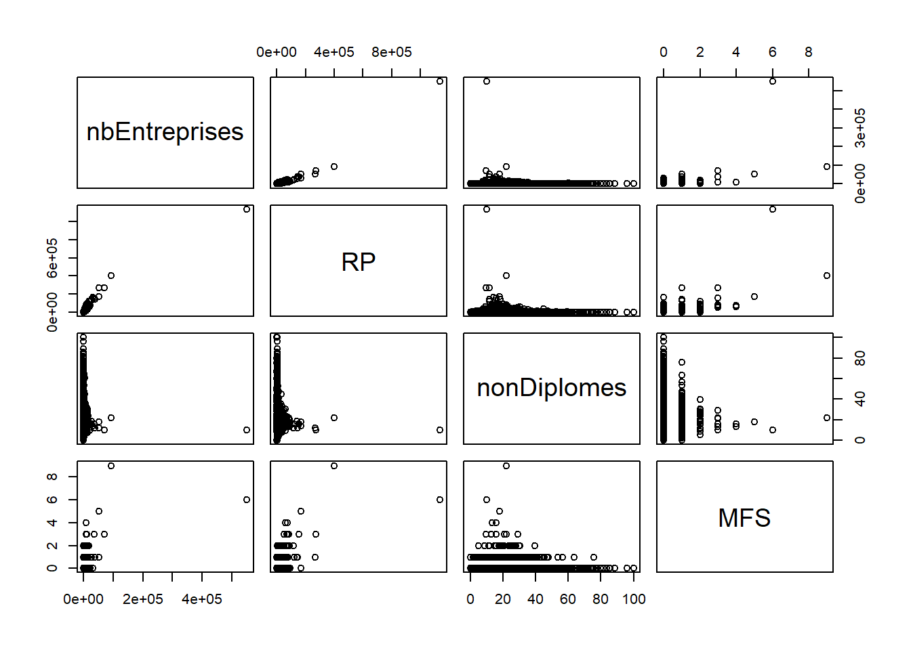
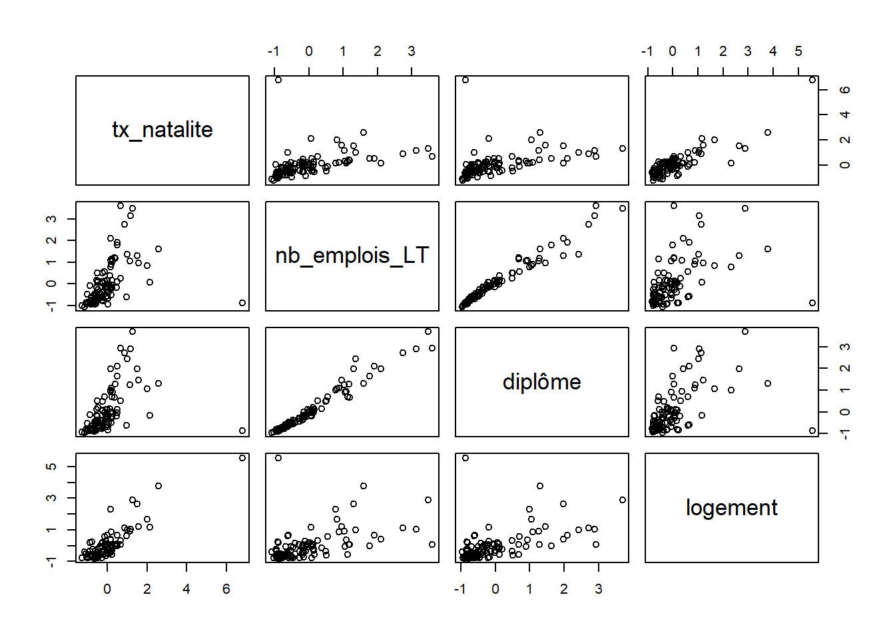
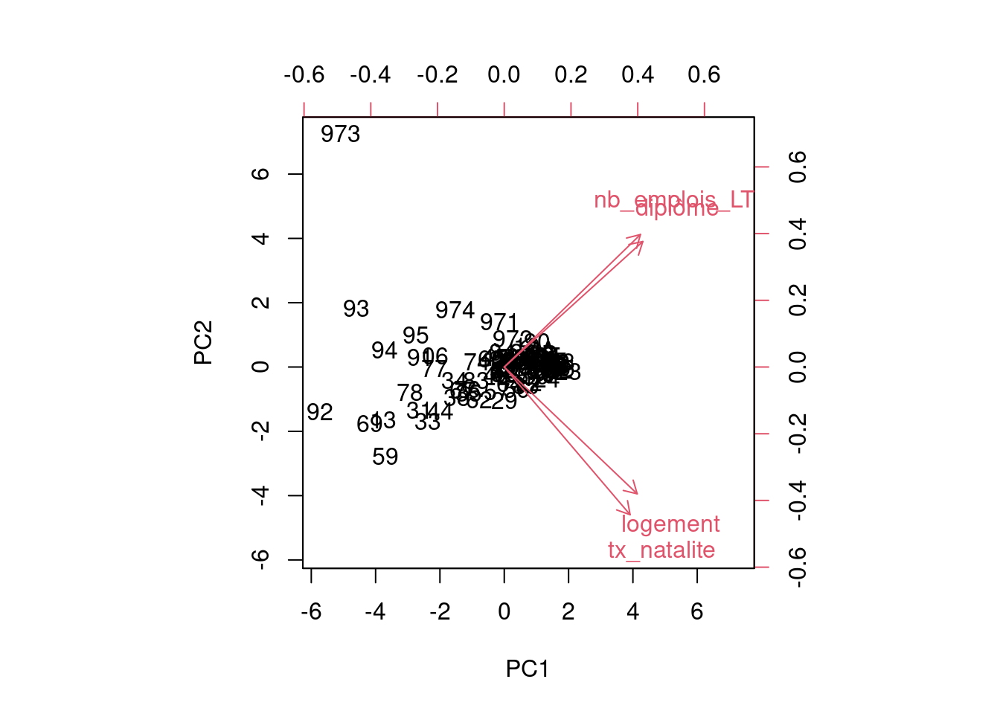

On parle ici d’analyse factorielle. Il ne s’agit pas de facteur explicatif mais de synthèse.
Les axes factoriels rendent comptent le mieux possible de la dispersion du nuage de points.
Un facteur regroupe des informations communes à plusieurs variables.
Le premier axe prend en compte le maximum d’information.
Le deuxième prend en compte le maximum d’information à partir des résidus du premier.
Et ainsi de suite …
… d’où l’importance de l’informatique pour traiter du multicritère !
https://statistiques-locales.insee.fr
Partir d’une hypothèse fictive
Par exemple, le nombre d’emploi par département dépend du taux de natalité et du nombre de diplômés et des conditions de logements.
Constituer le tableau à partir de l’outil.
Attention, exporter en .ods pour convertir en .csv après. L’import en .csv direct ne semble pas fonctionner.
Du coup, en profiter pour :
data <- read.csv("data/data.csv", encoding = "UTF-8", dec = ",")
str(data)## 'data.frame': 101 obs. of 6 variables:
## $ Code : chr "01" "02" "03" "04" ...
## $ libelle : chr "Ain" "Aisne" "Allier" "Alpes-de-Haute-Provence" ...
## $ tx_natalite : num 10.3 10.1 7.8 8 8.3 10.3 8.4 9.2 7.8 10 ...
## $ nb_emplois_LT: int 221023 170534 122388 58607 57813 409381 107694 91670 54957 113872 ...
## $ diplôme : int 138447 75739 55824 34922 33078 271395 64118 40635 29492 50112 ...
## $ logement : num 4.8 4.5 4.2 5.9 5.2 19.2 3.5 3.2 3.8 6.8 ...# rownames
rownames(data) <- data [,1]
data <- data [,3:6]
pairs(data)
Qu’en pensez-vous ? Est-il possible de comparer ces variables ?
Pour chaque variable, il faut chercher s’il n’y a pas de valeur aberrante.
“Les individus trop spécifiques brouillent le résumé.” (Chaudule, p. 138)
summary(data)## tx_natalite nb_emplois_LT diplôme logement
## Min. : 6.60 Min. : 31660 Min. : 15390 Min. : 2.800
## 1st Qu.: 8.40 1st Qu.: 110207 1st Qu.: 50006 1st Qu.: 4.100
## Median : 9.50 Median : 203900 Median : 95874 Median : 5.800
## Mean :10.14 Mean : 265993 Mean :149699 Mean : 7.878
## 3rd Qu.:10.50 3rd Qu.: 308367 3rd Qu.:175914 3rd Qu.: 8.100
## Max. :35.20 Max. :1842064 Max. :999354 Max. :57.500
## NA's :1 NA's :1rownames(data)## [1] "01" "02" "03" "04" "05" "06" "07" "08" "09" "10" "11" "12"
## [13] "13" "14" "15" "16" "17" "18" "19" "21" "22" "23" "24" "25"
## [25] "26" "27" "28" "29" "2A" "2B" "30" "31" "32" "33" "34" "35"
## [37] "36" "37" "38" "39" "40" "41" "42" "43" "44" "45" "46" "47"
## [49] "48" "49" "50" "51" "52" "53" "54" "55" "56" "57" "58" "59"
## [61] "60" "61" "62" "63" "64" "65" "66" "67" "68" "69" "70" "71"
## [73] "72" "73" "74" "75" "76" "77" "78" "79" "80" "81" "82" "83"
## [85] "84" "85" "86" "87" "88" "89" "90" "91" "92" "93" "94" "95"
## [97] "971" "972" "973" "974" "976"# Suppression de Paris... voire d'autres dpts ?
data <- data [-76,]Les coefficients de variation permettent également une première approche
# suppression des NA
data[is.na(data$nb_emplois_LT ),]## tx_natalite nb_emplois_LT diplôme logement
## 976 35.2 NA NA 57.5data[is.na(data$diplôme ),]## tx_natalite nb_emplois_LT diplôme logement
## 976 35.2 NA NA 57.5data <- data [!is.na(data$nb_emplois_LT)|!is.na(data$diplôme),]
coeffVariation <- function (x) {mean(x)/sd(x)}
coeff <- sapply(data, coeffVariation)
sd <- sapply(data, sd)
moy <- sapply(data, mean)
tab <- cbind(moy,sd, coeff)
round(tab,0)## moy sd coeff
## tx_natalite 10 3 4
## nb_emplois_LT 250073 204517 1
## diplôme 141116 130495 1
## logement 7 5 1Il faut pouvoir comparer les valeurs des variables indépendamment de l’unité originelle
écart à la moyenne de la valeur / écart-type
2 opérations :
centrage : écart à la moyenne (comme une translation graphique)
réduction : division par l’écart type, on exprime la différence en écart-type (comme un changement d’échelle)
La variable standardisée a pour moyenne 0 et pour écart-type 1
data_cr <- scale (data)
pairs(data_cr)
acp <- prcomp(data_cr)
# par défaut direction négative on inverse
acp$rotation <- -1 * acp$rotation
acp$rotation## PC1 PC2 PC3 PC4
## tx_natalite 0.4714389 -0.5534428 -0.68018553 -0.0937770
## nb_emplois_LT 0.5101455 0.4965657 -0.14518352 0.6870923
## diplôme 0.5191673 0.4704238 0.07490427 -0.7096169
## logement 0.4979581 -0.4752106 0.71460391 0.1247153acp$sdev^2 / sum(acp$sdev^2)## [1] 0.715009021 0.248162822 0.032499263 0.00432889473 % de la variance pris en compte par le premier axe, etc…
Le premier axe résume la variation de la moitié des valeurs des 4 variables.
L’axe 3 a une haute valeur pour le logement.
Le nombre d’emploi et le diplôme sont liés et s’opposent au surlogement et aux taux de natalité.
head(acp$x*-1)## PC1 PC2 PC3 PC4
## 01 -0.2272552 0.04012354 -0.4145808 -0.15460022
## 02 -0.6677361 -0.23844295 -0.4034370 0.01682340
## 03 -1.3139978 0.09124313 0.1815698 0.03937699
## 04 -1.3572893 -0.33682624 0.3957071 -0.02775151
## 05 -1.3790021 -0.34555301 0.2204260 -0.04801094
## 06 2.1487576 -0.33761251 1.5044645 0.10018876biplot(acp, scale = 0)
Les départements proches suivent le même modèle de données. Leur position dans le graphique montre leur rapport aux variables.
Dans le cas présent, les variables ne suivent pas les axes (problème des valeurs aberrantes).
Supprimer les valeurs posant problème et relancer les calculs. Essayer d’interpréter.
L5GEABIM Analyses bivariées et multivariées